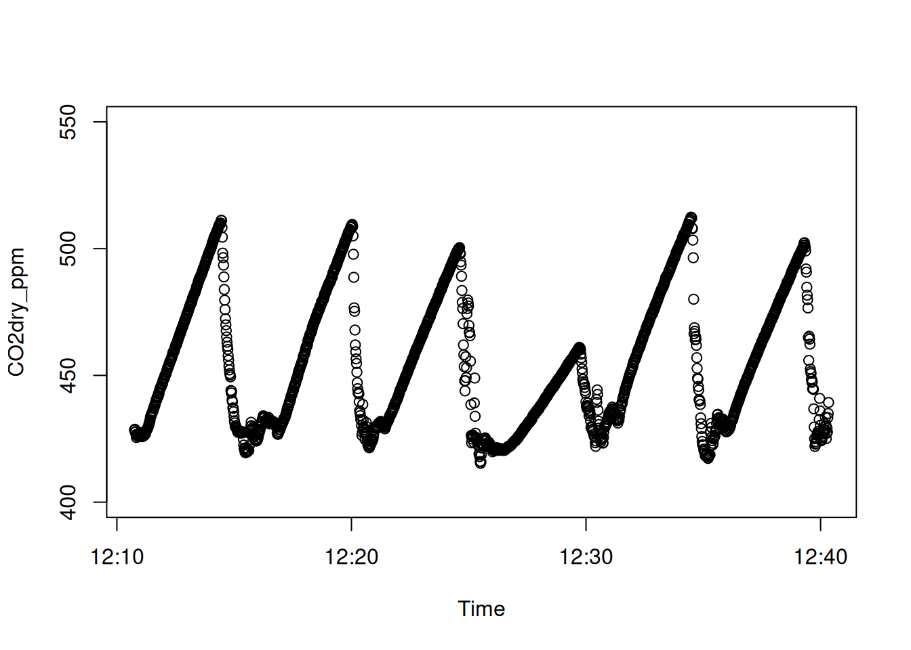

After import, the user can choose from two methods to define the start and end points of each measurement and assign a UniqueID:
Automatic identification of measurements - based on automatic recordings of chamber opening and closing from an instrument such as the LI-COR Smart Chamber or the GAIATECH Automated ECOFlux chamber, or from a reliable auxiliary file.
Manual identification of measurements - based on start.time, provided separately in an auxiliary file. The function obs.win splits the imported data into a list of data frame (divided by UniqueID) and creates an observation window around the start.time to allow for a manual selection of the start and end points of each measurements.
Automatic identification of measurements
If the imported file already contains the column chamID or UniqueID, the file is ready for flux calculation, as long as it also contains the necessary information for flux calculation, such as Vtot, Area, Pcham and Tcham, or that they can be provided as arguments in the goFlux function.
# Retrieve file path from example file in the goFlux package# using the function system.filefile.path <-system.file("extdata", "LI8200/LI8200.json", package ="goFlux")# Import in the environmentimp.LI8200 <-import.LI8200(inputfile = file.path)# Is there a column called chamID or UniqueID in this file?any(grepl("chamID|UniqueID", names(imp.LI8200)))
Alternatively, one may want to modify the start and end time even if there are automatic recordings of chamber closure and opening. For example, there might be a delay after chamber closure that needs to be removed.
In such cases, you can choose from two options:
Use the function autoID to automatically select the measurements’ window of observation (start to end points of the measurements), add a deadband or crop the end of all measurements.
Both methods rely on an auxiliary file, such as field notes or the recordings of the LI-COR Smart Chamber. Alternatively, a gas measurement file containing all necessary columns (e.g., start.time and UniqueID) does not require an auxiliary file.
Usage
Note
Code chunks under Usage sections are not part of the demonstration. They are meant to show you how to use the arguments in the function.
data.frame; output from import or align functions.
auxfile
data.frame; auxiliary data frame containing the columns start.time and UniqueID. start.time must contain a date and be in POSIXct format. The time zone must be the same as the POSIX.time in inputfile. The default time zone for the import functions is “UTC”. A data frame from the Smart Chamber (LI-8200) can be used as an auxiliary file. In that case, chamID will be used instead of UniqueID, if UniqueID cannot be found.
obs.length
numerical; chamber closure time (seconds). Default is NULL. If obs.length is not provided, a column obs.length should be contained in auxfile or inputfile. Alternatively, obs.length will be calculated from start.time and cham.open or end.time if found in auxfile or inputfile.
deadband
numerical; time (seconds) at the start of the measurement, after chamber closure, to be removed from the time stamps used to estimate the flux.
crop.end
numerical; time (seconds) at the end of the measurement, before chamber opening, to be removed from the time stamps used to estimate the flux.
shoulder
numerical; time before and after measurement in observation window (seconds). Default is 60 seconds. If the time between two measurements is smaller than shoulder, the time stamps are duplicated.
drop
logical; if drop = TRUE (default), time stamps without an assigned UniqueID are removed from the final data frame.
Details
Note that, if the time between two measurements is smaller than shoulder, the time stamps are duplicated, which can result in an output data frame larger (more rows) than the inputfile. Conversely, if drop = TRUE, time stamps without an assigned UniqueID are removed from the final data frame, which can result in an output data frame smaller (less rows) than the inputfile.
Examples
# How to use in multiple situations:library(dplyr)## with a LGR instrument and an auxiliary file (.txt)aux.path <-system.file("extdata", "aux_UGGA/aux_UGGA.txt", package ="goFlux")auxfile <-read.delim(aux.path) %>%mutate(start.time =as.POSIXct(start.time, tz ="UTC"))data(imp.UGGA)autoID.UGGA <-autoID(inputfile = imp.UGGA, auxfile = auxfile, obs.length =180)## with a LI-COR instrument and the Smart Chamber as auxiliary filedata(imp.LI8200)data(imp.LI7820)autoID.LI7820 <-autoID(inputfile = imp.LI7820, deadband =20, auxfile = imp.LI8200)## with the LI-6400 and no auxiliary filedata(imp.LI6400)ow.LI6400 <-obs.win(inputfile = imp.LI6400, shoulder =0)
Manual identification of measurements
The manual identification of measurements is done in three steps:
The auxiliary file (auxfile) requires two elements: a UniqueID and a start.time for each measurement. The UniqueID must be unique. For example, one could combine the name of a site (733a), a plot number (C) and a subplot (C), which would give the UniqueID “733a_C_C”. If repeated measurements are done on the same experimental unit, then a date (e.g. 2022-09-28) could be added to the UniqueID (e.g. “733a_C_C_220928”) to make it truly unique and easy to understand. The start.time must be in the format “%Y-%m-%d %H:%M:%S” (e.g. 2022-09-28 12:17:00) to be converted to POSIXct.
You can Download an example Excel spreadsheet that you can use to create your auxiliary file.
Load the auxfile
Creating an auxiliary file with date and time can be a pain, especially while using Excel. It is recommended to save your file as .txt before import into R, to make sure that the date and time formats are appropriate (“%Y-%m-%d %H:%M:%S”, e.g. 2022-09-28 12:17:00).
As a text file (.txt)
In this example, the start.time for each measurement (UniqueID) was noted manually in the field, and are provided in an auxiliary file constructed in Excel and saved as a text file (aux_UGGA.txt).
aux.path <-system.file("extdata", "aux_UGGA/aux_UGGA.txt", package ="goFlux")auxfile <-read.delim(aux.path) %>%# Use the function as.POSIXct to convert start.time to a POSIXct formatmutate(start.time =as.POSIXct(start.time, tz ="UTC"))
You’ll note that this function detects Date format and converts it to POSIXct automatically.
class(auxfile.xlsx$start.time)
[1] "POSIXct" "POSIXt"
Make sure that the time zone in your auxfile matches the time zone in your imported gas measurements files. By default, all import functions, as well as the function read_excel, use the time zone UTC.
In this example, the auxfile also contains additional auxiliary data that will be required for the flux calculation: the surface area inside the chamber (Area; cm2), the total volume inside the chamber, the tubing, and the instrument (Vtot; L), the atmospheric temperature inside the chamber (Tcham; Celsius) and the atmospheric pressure inside the chamber (Pcham; kPa).
If start time is unknown
If field notes did not include the start.time of each measurement, it is possible to quickly construct an auxfile by visually inspecting each gas measurement files.
# Retrieve file path from example file in the goFlux package# using the function system.filefile.path <-system.file("extdata", "UGGA/UGGA.txt", package ="goFlux")# Import in the environmentimp.UGGA <-import.UGGA(inputfile = file.path)# Visualise dataplot(x = imp.UGGA$POSIX.time, y = imp.UGGA$CO2dry_ppm, # Dataxlab ="Time", ylab ="CO2dry_ppm", # Labelsylim =c(400, 550)) # Plot limits

TipTip to improve x axis time display
To help visualize the time on the x axis, remove the x axis in the function plot and use the function axis.POSIXct to display the time in the desired format:
# Visualise dataplot(x = imp.UGGA$POSIX.time, y = imp.UGGA$CO2dry_ppm, # Dataxlab ="Time", ylab ="CO2dry_ppm", # Labelsylim =c(400, 550), # Plot limitsxaxt ='n') # remove x axis tick marks# get the right time zone from your datatime.zone <-attr(imp.UGGA$POSIX.time, "tzone")# force axis.POSIXct to use that time zone by changing the system timezoneSys.setenv(TZ = time.zone)# add the new x axis to the plotaxis.POSIXct(1, at =seq(min(imp.UGGA$POSIX.time), max(imp.UGGA$POSIX.time), by ="3 mins"), format ="%H:%M")# change the system timezone back to defaultSys.unsetenv("TZ")
In this example there are six measurements of approximately three minutes each. Looking at the graph, you can roughly estimate the start time of each measurement:
Peak_#
UniqueID
start.time
(estimated)
start.time
(from field notes)
Peak_1
733a_C_S
12:12:00
12:11:00
Peak_2
733a_C_C
12:18:00
12:17:00
Peak_3
733a_C_E
12:23:00
12:21:00
Peak_4
733a_B_W
12:27:00
12:26:00
Peak_5
733a_B_S
12:33:00
12:31:00
Peak_6
733a_B_E
12:37:00
12:36:00
In the next step (2), you will define a window of observation for each measurement based on the start.time, the observation length (obs.length) and some buffer time (shoulder) before and after the measurement. Knowing this, it does not matter how exact your estimation is, because you can allow for more buffer before and after the measurement.
2. Define a window of observation for each measurement
In the next step (3), you must click on the start point and the end point of each measurement in a scatter plot to identify the start.time and the end.time, using the function click.peak2. Before that, you must create a list of data frame containing one data frame per UniqueID using the function obs.win. In this example, this step will separate the file imp.UGGA into a list of 6 data frames.
The purpose of this step is to zoom in on each measurement in the file to help you identify the start and end time more easily. In order to correctly zoom in on each measurement, you must know the start.time (defined in step 1) and the observation length (obs.length) of each measurement. In addition, you can define some buffer time around each measurement in case the defined start.time is not exact. If the observation length is different for each measurement, use the longest one.
data.frame; output from import or align functions.
auxfile
data.frame; auxiliary data frame containing the columns start.time and UniqueID. start.time must contain a date and be in POSIXct format. The time zone must be the same as the POSIX.time in inputfile. The default time zone for the import functions is “UTC”. A data frame from the Smart Chamber (LI-8200) can be used as an auxiliary file. In that case, chamID will be used instead of UniqueID, if UniqueID cannot be found.
gastype
character string; specifies which gas should be displayed on the plot to manually select start time and end time of measurements. Must be one of the following: “CO2dry_ppm”, “COdry_ppb”, “CH4dry_ppb”, “N2Odry_ppb”, “NH3dry_ppb” or “H2O_ppm”. Default is “CO2dry_ppm”.
obs.length
numerical; chamber closure time (seconds). Default is NULL. If obs.length is not provided, a column obs.length should be contained in auxfile or inputfile. Alternatively, obs.length will be calculated from start.time and cham.open or end.time if found in auxfile or inputfile.
shoulder
numerical; time before and after measurement in observation window (seconds). Default is 120 seconds.
Details
In gastype, the gas species listed are the ones for which this package has been adapted. Please write to the maintainer of this package for adaptation of additional gases.
Example
In this example, the observation length was approximately three minutes (180 seconds) for each measurement. For a shoulder of 60 seconds, the observation window of each measurement will show 60 seconds before the start.time and 240 seconds after.
Note that, in this example, there is an overlap between the peaks 2 and 3. Therefore, 60 seconds of the data will be duplicated in the data frames of these two UniqueID.
TipTip: Use the function on multiple files at a time
To load multiple RData files at once in your environment and store them all in one object, use the function map_df from the package purrr.
Use the argument pattern to load only the files that match a pattern.
Pay attention to the warning message given by obs.win when there are more than 20 measurements (which is not the case in this example). If there had been more than 20 measurements, a warning like this would appear:
WARNING! Do not loop through more than 20 measurements at a time to avoid mistakes.
You have 21 measurements in your dataset.
You should split the next step into at least 2 loops.
In such a case, follow this tip with the function click.peak2
3. Click on a scatter plot to identify start and end times
When running the function click.peak2, for each measurement, a window will open, in which you must click on the start point and the end point. The observation window is based on the start.time given in the auxfile, the length of the measurement (obs.length), and a shoulder before start.time and after start.time + obs.length.
list of data.frame; output from the function obs.win. Must contain the columns gastype (see below), POSIX.time and UniqueID.
gastype
character string; specifies which gas should be displayed on the plot to manually select start time and end time of measurements. Must be one of the following: “CO2dry_ppm”, “COdry_ppb”, “CH4dry_ppb”, “N2Odry_ppb”, “NO2dry_ppb”, “NOdry_ppb”, “NH3dry_ppb” or “H2O_ppm”. Default is “CO2dry_ppm”.
sleep
numerical value; delay before closing the resulting plot. Grants a delay between measurements to visually inspect the output before processing the next measurement. Sleep must be shorter than 10 seconds. If sleep = NULL, the plots will not close.
plot.lim
numerical vector of length 2; sets the Y axis limits in the plots. Default values are set for a typical gas measurement of “CO2dry_ppm” from soils: plot.lim = c(380,1000).
seq
a numerical sequence that indicates objects in a list. By default, seq = NULL and the function loops through all data frames in ow.list.
warn.length
numerical value; limit under which a measurement is flagged for being too short (nb.obs < warn.length). Default value is warn.length = 60.
save.plots
character string; a file path with the extension .pdf to save the plots produced with click.peak2. By default, save.plot = NULL and plots are not saved.
width
numerical value; width of the pop-up window.
height
numerical value; height of the pop-up window.
abline
logical; if TRUE (default), blue vertical lines indicate start.time and end.time on both plots.
abline_corr
logical; if TRUE (default), red vertical lines indicate start.time_corr and end.time_corr on validation plot.
Details
The argument plot.lim is used to remove any data points below and above the plot limits for a better view of the scatter plot. If the gas measurements are larger than the minimum or smaller than the maximum plot limit values, then the plot will automatically zoom in and adjust to those values. The default plot limits are set for a typical gas measurement of “CO2dry_ppm” from a soil respiration measurement: plot.lim = c(380,1000), where 380 ppm is the minimum plotted concentration, which should be close to atmospheric concentration, and 1000 ppm is the maximum plotted concentration, which correspond to a maximal accumulated concentration in the chamber before considering it an outlier (e.g. caused by breath or gas bubble). For other gasses, the user must specify the plot limits themselves. Here are some suggestions of plot limits for the other gases:
“CH4dry_ppb”: plot.lim = c(2200, 1800)
“N2Odry_ppb”: plot.lim = c(250, 500)
“NH3dry_ppb”: plot.lim = c(0, 200)
“COdry_ppb”: plot.lim = c(0, 200)
“H2O_ppm”: plot.lim = c(10000, 20000)
These values will vary depending on ecosystem type and chamber application scheme.
The argument seq is used to select a subset of data frame from the list of data frames in ow.list. For example, to apply the function on the first measurement in the list, set seq = 1, or seq = seq(1,10) for the first 10 measurements.
warn.length is the limit below which the chamber closure time is flagged for being too short (nb.obs < warn.length). Portable greenhouse gas analyzers typically measure at a frequency of 1 Hz. Therefore, for the default setting of warn.length = 60, the chamber closure time should be approximately one minute (60 seconds). If the number of observations is smaller than the threshold, a warning is printed: “Number of observations for UniqueID: ‘UniqueID’ is X observations”.
In gastype, the gas species listed are the ones for which this package has been adapted. Please write to the maintainer of this package for adaptation of additional gases.
The arguments width and heigth are used with the function dev.new to define the dimensions of the pop-up window.
Value
The function returns a data.frame, identical to an unlisted version of the input ow.list, with the additional flag, Etime, start.time_corr, end.time_corr and obs.length_corr.
Example
ImportantWARNING! About pop-up graphics device
This function makes use of the function graphics::identify() which is only supported on screen devices such as X11, windows and quartz. It is therefore essential to verify that your system options are compatible with this function before running it, to avoid errors. Here is an example of how to modify your system options for graphics device:
default.device <-getOption("device") # save default optionoptions(device ="X11") # change system option to device = "X11"
After using the function click.peak2, remember to revert back to your default system option.
options(device = default.device) # revert back to default option
In this example, the observation time is 3 minutes (180 seconds) and the shoulder is 60 seconds. Therefore, the observation window shows 60 seconds before the start.time and 240 seconds after.
# Manually identify measurements by clicking on the start and end pointsmanID.UGGA <-click.peak2(ow.UGGA, seq =1)
Figure 1
Figure 2
Tip 1: Multiple loops with large data sets
Note that the output from the function obs.win is a list of data frames. The function click.peak2 loops through all data frames in the list.
For more than 20 measurements, it is highly recommended to create multiple loops. This helps avoid issues with miss-clicking and repeating the process.
If you need to create multiple loops, use the argument seq in click.peak2:
# Create two loopsmanID.UGGA.1<-click.peak2(ow.UGGA, seq =seq(1,10))manID.UGGA.2<-click.peak2(ow.UGGA, seq =seq(11,20))# Combine the two objects back into one objectmanID.UGGA <-rbind(manID.UGGA.1, manID.UGGA.2)
TipSleep between loops
Between each measurement, the result of the function click.peak2 is displayed for 3 seconds. To increase this delay, change the parameter sleep in the function click.peak2. To prevent the quality check plots from closing, use sleep = NULL.
TipSave plots
Both plots generated in the function click.peak2 can be saved as a pdf using the argument save.plots with a character string indicating the name of the pdf file (without the extension .pdf):
If the number of observation is under a certain threshold (warn.length = 60), a warning will be given after clicking on the start and end points as such:
Warning message: Number of observations for UniqueID: 733_C_C is 59 observations
Otherwise, if the number of observation satisfies this threshold, then the following message is given instead:
Good window of observation for UniqueID: 733a_C_C
This argument can be adjusted depending on the expected number of observations in your experiment.
To convert the flux estimate’s units into nmol CO2/H2O m-2s-1 or µmol CH4/N2O m-2s-1, the temperature inside the chamber (Tcham; °C) and the atmospheric pressure inside the chamber (Pcham; kPa) are also required. If Pcham and Tcham are missing, normal atmospheric pressure (101.325 kPa) and an air temperature of 15 °C are used as default.
Additionally, one must provide the surface area inside the chamber (Area; cm2) and the total volume in the system, including tubing, instruments and chamber (Vtot; L). If Vtot is missing, one must provide an offset (distance between the chamber and the soil surface; cm) and the volume of the chamber (Vcham; L). In that case, the volume inside the tubing and the instruments is considered negligible, or it should be added to Vcham.
The final output, before flux calculation with goFlux requires the columns: UniqueID, Etime, flag, Vtot (or Vcham and offset), Area, Pcham, Tcham, H2O_ppm and other gases.